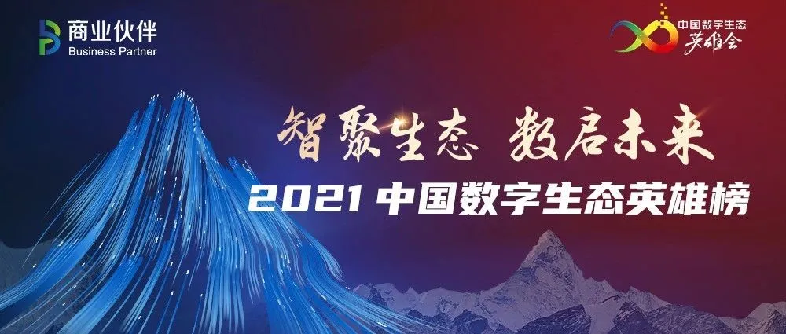

要闻 | 万里总经理郑红云荣膺“2021中国数字生态英雄榜金融数字化服务杰出人物”奖
生态大咖云集，数英雄人物还看今朝！
5月8日，国内数字生态领域最高参会规格盛会之一——2021中国数字生态英雄会在北京成功举办。本届峰会以“智聚生态 数启未来”为主题，邀请中国工程院院士邬贺铨、中国政策科学研究会经济政策委员会副主任徐洪才、中国信通院总工程师胡坚波等专家学者及产业界数十位知名数字企业领袖和生态大佬齐聚大会，共议新时期中国数字生态发展大计。

万里数据库作为数字生态领域知名数据库企业受邀亮相，总经理郑红云女士荣膺“2021中国数字生态英雄榜金融数字化服务杰出人物”奖，身体力行推动金融数字生态高质量发展。
英
雄
会
中国数字生态英雄会由B.P商业伙伴主办，原中国IT生态英雄会演化而来，自2015年至今已成功举办七届。大会汇聚数字产业生态领域各方英豪，围绕数字产业、资本双方及业界关注的数字技术及生态热点领域等进行高质量的交流、合作与对话，旨在进一步推进数字生态体系建设，服务于数字经济下的各行各业数字化转型，把握国内数字生态体系发展规律和脉搏。
数字生态英雄迎来高光时刻
总经理郑红云荣膺“金融数字化服务杰出人物”
8日晚间，2021中国数字生态英雄榜单隆重揭幕。经过激烈评选角逐，万里数据库总经理郑红云女士以卓有成效的金融创新应用实践及20余年深厚的行业经验荣膺“2021中国数字生态英雄榜金融数字化服务杰出人物”奖。
图
万里数据库总经理郑红云（左四）上台领奖
郑红云
万里数据库创始人&总经理
从事基础软件行业20余年，带领公司在数据库、操作系统等领域深耕，践行“极致性能、极致稳定、极致易用”的产品理念，推动产品在500多个业务场景落地。
2020年，公司更是荣获多项行业大奖，如：2020中国国际金融展“金鼎奖”之年度优秀网信产品基础软硬件奖、2020数据风云奖之年度创新企业、2020中国信创产业创新奖之最佳创新技术奖等。
夯实数字化底座
服务千行百业数字化转型
当下，数字经济成为我国经济的重要组成部分，数字中国建设加速发展，国家工信部更是提出了推动数字产业做大做强，推进数字化转型走深走实，逐步完善数字生态体系的指导方针。数据作为数字经济的基石，是夯实数字化底座、加快数字化转型的关键所在，其相关的产品与技术能力备受瞩目。
总经理郑红云表示，奖项的获得是全体万里人共同努力的结晶，也是B.P商业伙伴对我们的认可与肯定。万里数据库作为专注自主研发数据库产品超20年的企业，未来会有更大的担当。
未来，她将继续带领公司上下全力奔跑，不断打磨产品、技术，以客户为中心，打造值得信赖、好用、易用的数据库产品与解决方案，为客户提供最优服务，为整体数字生态的发展、壮大及走向繁荣提供坚实技术支撑，顺应数字经济发展大势，更好服务于千行百业数字化转型，推动国内数字产业做大做强。

数字生态方兴未艾，英雄领袖应召启程。在数字生态建设蓬勃发展的今天，万里数据库愿乘风而上，尽献一臂之力！
推荐阅读1.热点 | 聚焦两会科技创新 万里数据库交出“数据库创新产品奖”完美答卷
2. 要闻 | 万里数据库荣膺2020年度数据库创新产品奖
3. 再获肯定 | 万里数据库入选《2020年度中国信创TOP500》


扫码二维码
关注公众号